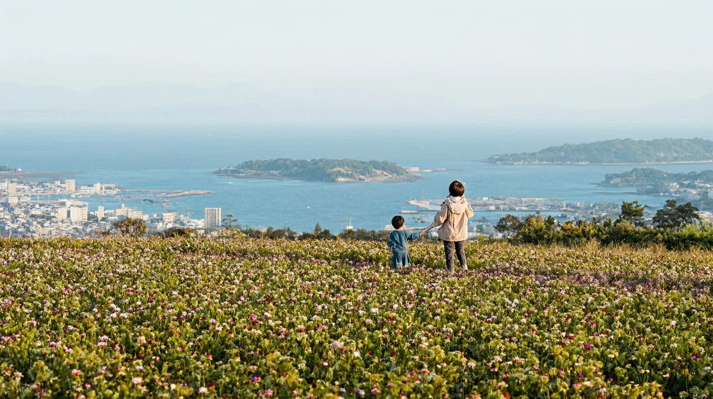

후쿠오카 4박 5일 가족 일정
3박 4일 코스에 노코노시마 꽃섬 반나절 또는 과학관·동물원 하루를 더한 후쿠오카 가족 코스

성인 2명과 초등 자녀 1명 가족 기준의 4박 5일 코스입니다. 3박 4일 코스에 하루를 더해, 4일차에 '노코노시마 섬 반나절' 또는 '과학관과 동물원 시내 하루' 중 하나를 고릅니다. 1~2일차는 2박 3일 코스와 같고, 3일차는 해변공원과 마린월드입니다.
코스 한눈에 보기
- 1일차공항 → 하카타 → 앙팡맨 어린이 박물관 → 나카스 야타이
- 2일차다자이후 텐만구 → 참배길 우메가에모치
- 3일차마린월드 우미노나카미치 → 해변공원야나가와 뱃놀이로 바꿔도 됩니다
- 4일차C. 노코노시마 꽃섬 반나절 또는 D. 동식물원 → 과학관아래 비교를 보고 선택
- 5일차후쿠오카 타워(선택) → 공항
4일차, 어디로 갈까
| C. 노코노시마 반나절 | D. 과학관과 동물원 | |
|---|---|---|
| 한 줄 요약 | 배로 10분 가는 꽃 공원 섬. 오전에 가서 오후 초에 돌아옴 | 시내에서 이동이 짧은 실내외 혼합 하루 |
| 쉬는 날 | 연중무휴 | 동식물원 월요일, 과학관 화요일. 둘 다 가려면 수~일요일 |
| 날씨 | 바람과 비에 약하고 배가 결항될 수 있음 | 과학관은 실내, 동물원은 비 오면 어려움 |
| 이런 가족에게 | 꽃과 바다 풍경, 배 타기를 좋아함 | 과학과 동물을 좋아하고 이동을 줄이고 싶음 |
1일차도착일, 하카타와 나카스
- 오전 도착
공항 → 하카타역
국제선 → 무료 셔틀 → 지하철 공항선 하카타역까지 약 5분
- 점심 · 오후
하카타 라멘 → 앙팡맨 어린이 박물관
박물관은 나카스카와바타역과 건물 안으로 연결됩니다. 유모차는 안에 들일 수 없습니다.
- 16:30
숙소에서 휴식
- 저녁
나카스 야타이
현금 위주, 화장실 없음. 문 열자마자(18:30~19:00) 가면 대기가 짧습니다.
2일차다자이후 반나절
- 아침
텐진 → 다자이후
니시테츠 후쿠오카(텐진) 역에서 '산책 티켓'(왕복 전철 + 우메가에모치 교환권)을 삽니다.
후츠카이치 환승, 약 30분
- 오전
다자이후 텐만구와 참배길
- 14:30
숙소 복귀, 낮잠
3일차마린월드와 해변공원
- 오전
하카타역 → 우미노나카미치역 → 마린월드
JR로 가시이역에서 갈아탑니다. 유모차 무료 대여와 수유실이 있습니다.
약 30~44분 · 가시이 환승
- 점심 후
우미노나카미치 해변공원
입장료는 현금만, 중학생 이하 무료입니다. 2026년 11월 10일~12월 30일에는 화요일에 쉽니다.
- 15:30
숙소로 돌아가 휴식
야나가와로 바꾸려면후쿠오카 3박 4일 코스의 '3일차 B'를 참고하세요.
4일차 C노코노시마 꽃섬 반나절
- 08:30
숙소 → 메이노하마역 → 도선장
지하철 공항선으로 메이노하마역까지 가서, 북쪽 출구에서 버스로 도선장까지 갑니다.
메이노하마역에서 버스 약 15분
- 09:15 또는 10:15
배로 노코노시마
메이노하마 출발은 낮에 매시 15분입니다. 섬 도착 후 섬 버스로 공원까지 갑니다.
배 약 10분 · 섬 버스 약 13분
- 오전 ~ 점심
노코노시마 아일랜드 파크
계절 꽃밭, 놀이 시설, 동물 체험이 있습니다. 섬 상점은 현금이 편합니다.
- 14:00 또는 15:00
정각 배로 돌아오기
노코 출발은 매시 정각입니다. 주말과 꽃 행사일은 돌아오는 배가 붐비니 귀가 시각을 먼저 정하세요. 숙소 휴식은 16시부터.
배 시간 주의배는 시간당 1편 안팎이라 한 편을 놓치면 한 시간을 기다립니다. 바람이 강한 날은 당일 운항 정보를 먼저 확인하세요.
4일차 D동식물원과 과학관
- 오전
후쿠오카 시 동식물원
언덕이 많아 체력이 있는 오전에 걷습니다. 중학생 이하는 무료, 월요일 휴원입니다.
- 점심 후
후쿠오카 시 과학관
지하철 나나쿠마선 롯폰마쓰역 3번 출구 근처입니다. 5층 기본 전시실과 6층 돔 극장(플라네타륨)이 있고, 상영 일정은 공식 사이트에서 확인합니다. 화요일 휴관입니다.
아이가 지쳤다면동물원은 빼고 과학관만 가도 충분합니다. 매표소(3층)는 카드와 교통 IC 카드를 받습니다.
5일차귀국일
- 오전 · 선택
후쿠오카 타워
9:30 개장. 비행기가 13시 전이면 생략합니다.
- 출발
하카타역 → 공항
지하철로 국내선 터미널역, 1번 승강장에서 국제선 셔틀을 탑니다. 출발 2시간 30분 전 도착을 권합니다. 면세 환급은 짐을 부치기 전에 마치세요.
쉬는 날 먼저 확인
- 큐슈 국립박물관, 후쿠오카 시 동식물원: 월요일
- 후쿠오카 시 과학관: 화요일 (방학 기간은 매일 개관)
- 우미노나카미치 해변공원: 2026년 11월 10일~12월 30일 매주 화요일, 연말연시
- 마린월드: 1월 셋째 월요일부터 4일간. 2027년 1월 12일~4월 9일은 쇼 중단
비 오는 날
4일차 C가 비바람이면 D에서 과학관만 가거나 앙팡맨 어린이 박물관을 한 번 더 갑니다. 3일차에 비가 오면 마린월드만 봅니다.
같이 보면 좋은 글
출처
- 후쿠오카 시 도선 시각표: city.fukuoka.lg.jp
- 노코노시마 아일랜드 파크: nokonoshima.com
- 후쿠오카 시 과학관: fukuokacity-kagakukan.jp
- 후쿠오카 시 동식물원: zoo.city.fukuoka.lg.jp
- 마린월드: marine-world.jp
- 우미노나카미치 해변공원: uminaka-park.jp
- 앙팡맨 어린이 박물관: fukuoka-anpanman.jp
요금과 운영 시간은 바뀔 수 있으니 이용 전 공식 안내를 확인하세요.